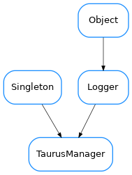

TaurusManager¶

-
class
TaurusManager[source]¶ Bases:
taurus.core.util.singleton.Singleton,taurus.core.util.log.LoggerA
taurus.core.util.singleton.Singletonclass designed to provide Taurus management.Example:
>>> import taurus.core.taurusmanager >>> manager = taurus.core.taurusmanager.TaurusManager() >>> print manager == taurus.core.taurusmanager.TaurusManager() True
-
DefaultSerializationMode= 1¶
-
PLUGIN_KEY= '__taurus_plugin__'¶
-
addJob(job, callback=None, *args, **kw)[source]¶ Add a new job (callable) to the queue. The new job will be processed by a separate thread
Parameters:
-
applyPendingOperations(ops)[source]¶ Executes the given operations
Parameters: ops (sequence<taurus.core.taurusoperation.TaurusOperation>) – the sequence of operations
-
default_scheme= 'tango'¶
-
findObject(absolute_name)[source]¶ Finds the object with the given name
Parameters: absolute_name ( str) – the object nameReturn type: TaurusModelorNoneReturns: the taurus model object or None if no suitable name found
-
findObjectClass(absolute_name)[source]¶ Finds the object class for the given object name
Parameters: absolute_name ( str) – the object nameReturn type: TaurusModelorNoneReturns: the taurus model class object or None if no suitable name found
-
getAttribute(name)[source]¶ Returns a attribute object for the given name
Parameters: name ( str) – attribute nameReturn type: TaurusAttributeReturns: the attribute for the given name
-
getAuthority(name)[source]¶ Returns a database object for the given name
Parameters: name ( str) – database nameReturn type: TaurusAuthorityReturns: the authority for the given name
-
getConfiguration(*args, **kwargs)¶ Returns a configuration object for the given name
type name: strparam name: configuration name rtype: TaurusConfigurationreturn: the configuration for the given name Deprecated since version 4.0: Use getAttribute instead
-
getDefaultFactory()[source]¶ Gives the default factory.
Return type: TaurusFactoryReturns: the default taurus factory
-
getDevice(name)[source]¶ Returns a device object for the given name
Parameters: name ( str) – device nameReturn type: TaurusDeviceReturns: the device for the given name
-
getFactory(scheme=None)[source]¶ Gives the factory class object supporting the given scheme
Parameters: scheme ( strorNone) – the scheme. If None the default scheme is usedReturn type: TaurusFactoryorNoneReturns: the factory class object for the given scheme or None if a proper factory is not found
-
getObject(cls, name)[source]¶ Gives the object for the given class with the given name
Parameters: - cls (
TaurusModel) – object class - name (
str) – the object name
Return type: TaurusModelorNoneReturns: a taurus model object
- cls (
-
getOperationMode()[source]¶ Deprecated. Gives the current operation mode.
Return type: OperationModeReturns: the current operation mode
-
getPlugins()[source]¶ Gives the information about the existing plugins
Return type: dict<str,TaurusFactory>Returns: the list of plugins
-
getScheme(name)[source]¶ Returns the scheme name for a given model name
Parameters: name ( str) – model nameReturn type: strReturns: scheme name
-
getSerializationMode()[source]¶ Gives the serialization operation mode.
Return type: TaurusSerializationModeReturns: the current serialization mode
-
init(*args, **kwargs)[source]¶ Singleton instance initialization. For internal usage only. Do NOT call this method directly
-